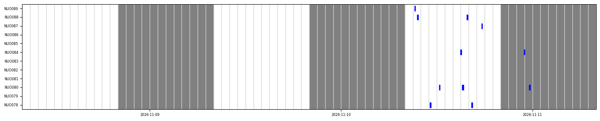
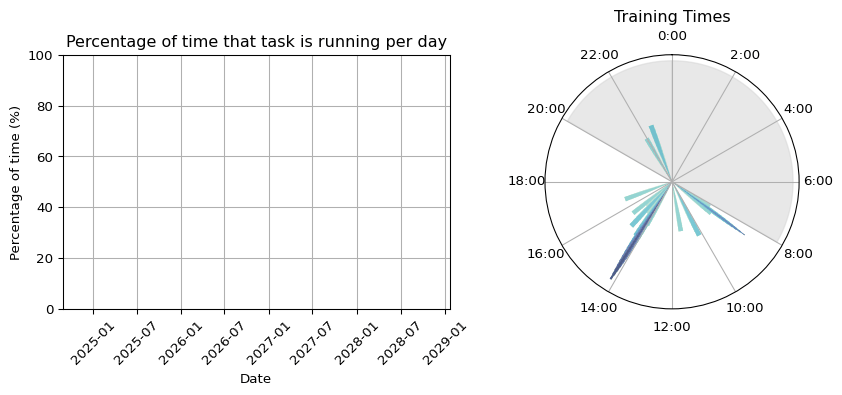
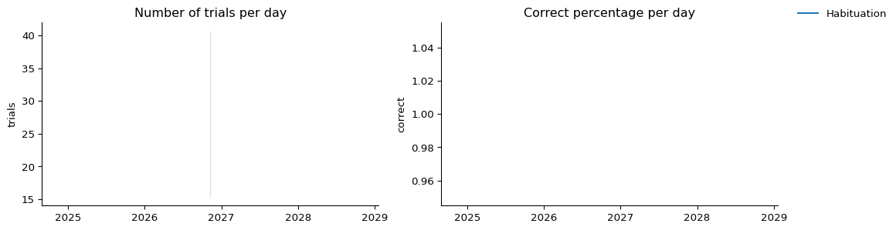
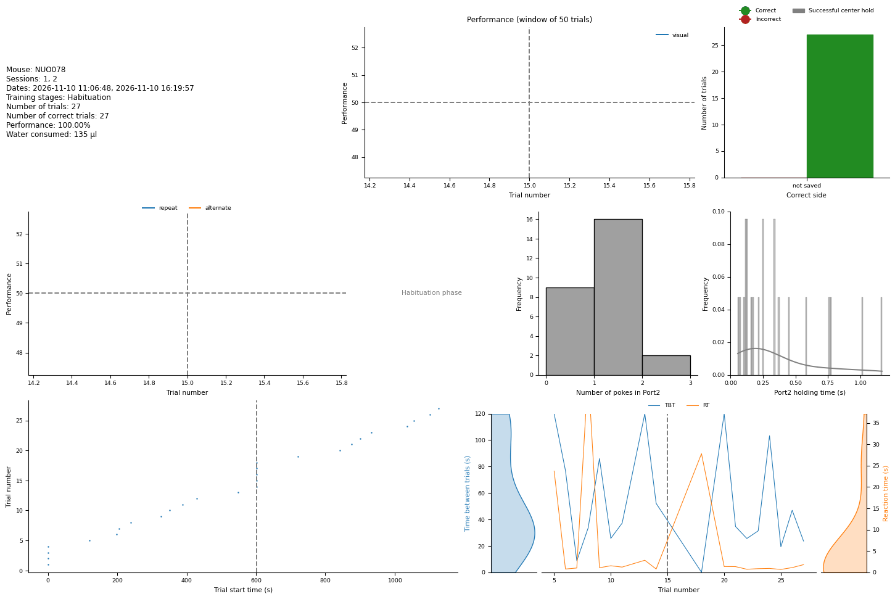
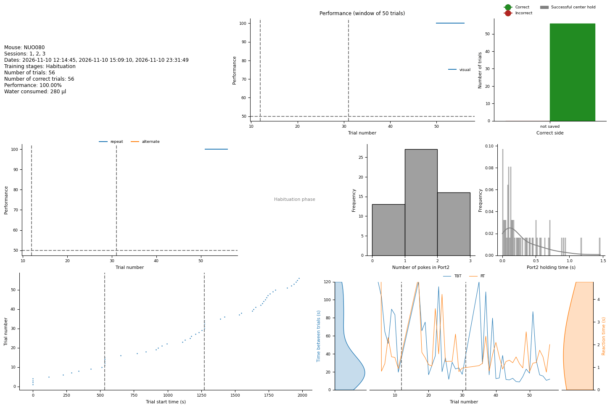
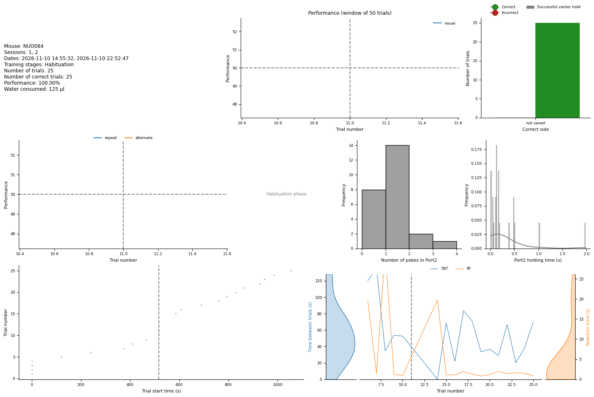
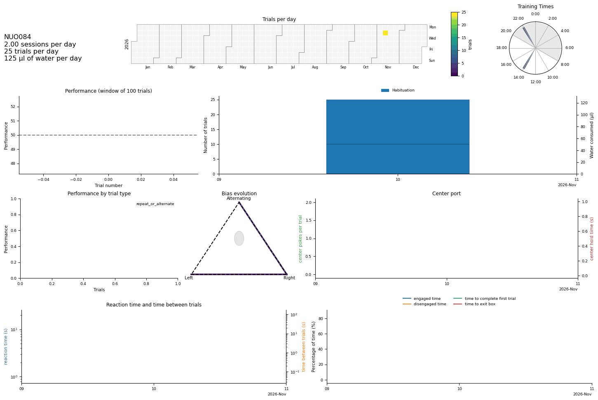
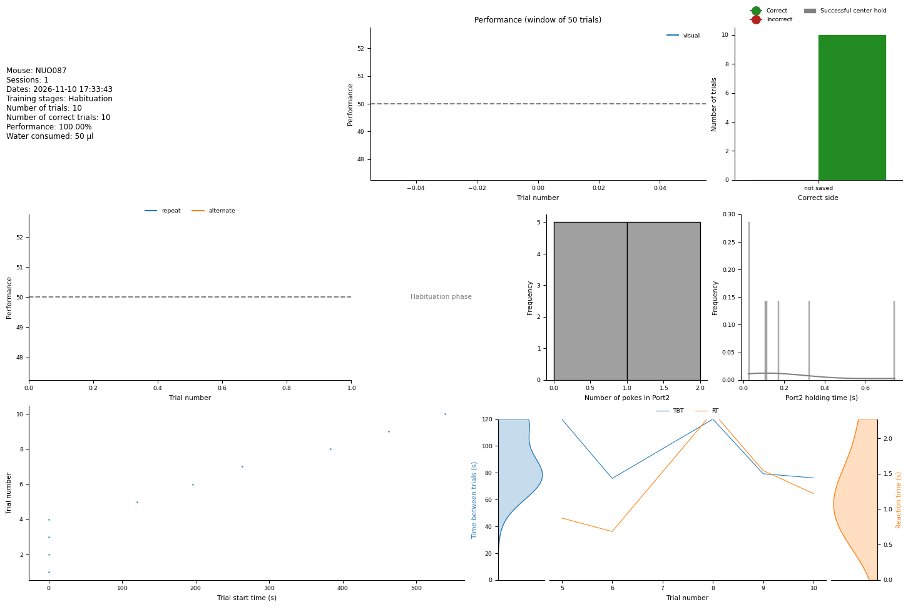
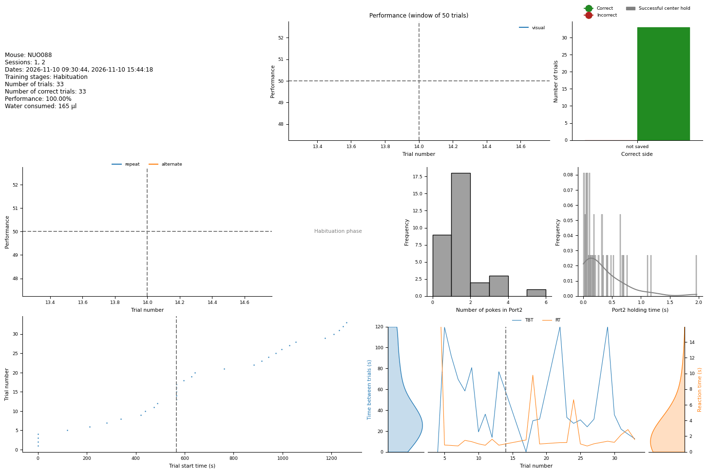
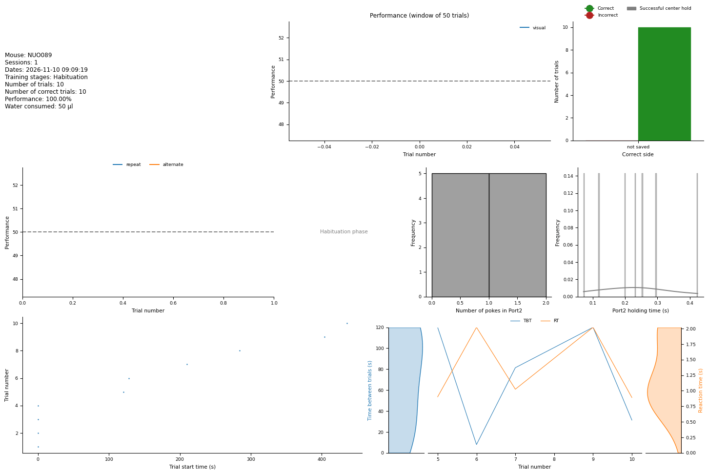

Setups: village06.
Note: No trials found for: NUO079, NUO081, NUO082, NUO083, NUO085, NUO086.
Setups: village06.
Note: No trials found for: NUO079, NUO081, NUO082, NUO083, NUO085, NUO086.
Corridor plot of the last 4 days

Performance over time for all mice
Behavioral Box occupancy and training times heatmap

Overall number of trials and performance for the whole training cohort


Error setting x-axis limits: Axis limits cannot be NaN or InfNUO079 did not train on 2026-11-10.
No trials for NUO079 up to 2026-11-10.

Error setting x-axis limits: Axis limits cannot be NaN or InfNUO081 did not train on 2026-11-10.
No trials for NUO081 up to 2026-11-10.
NUO082 did not train on 2026-11-10.
No trials for NUO082 up to 2026-11-10.
NUO083 did not train on 2026-11-10.
No trials for NUO083 up to 2026-11-10.

Error setting x-axis limits: Axis limits cannot be NaN or Inf
NUO085 did not train on 2026-11-10.
No trials for NUO085 up to 2026-11-10.
NUO086 did not train on 2026-11-10.
No trials for NUO086 up to 2026-11-10.

Error setting x-axis limits: Axis limits cannot be NaN or Inf
Error setting x-axis limits: Axis limits cannot be NaN or Inf
Error setting x-axis limits: Axis limits cannot be NaN or InfPanels and cells of this report that could not be generated (they show a red message where they should be).